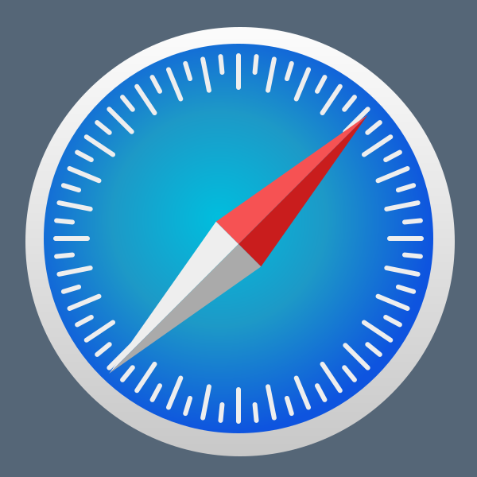

Icons and Logos
Objective: Make icons and logos of various companies and programs in SVG.
Problem: The icons look very complicated and tedious to make.
Solution: Leveraged repetition to duplicate things going around a circle, easing the process.
Objective: Make icons and logos of various companies and programs in SVG.
Problem: The icons look very complicated and tedious to make.
Solution: Leveraged repetition to duplicate things going around a circle, easing the process.